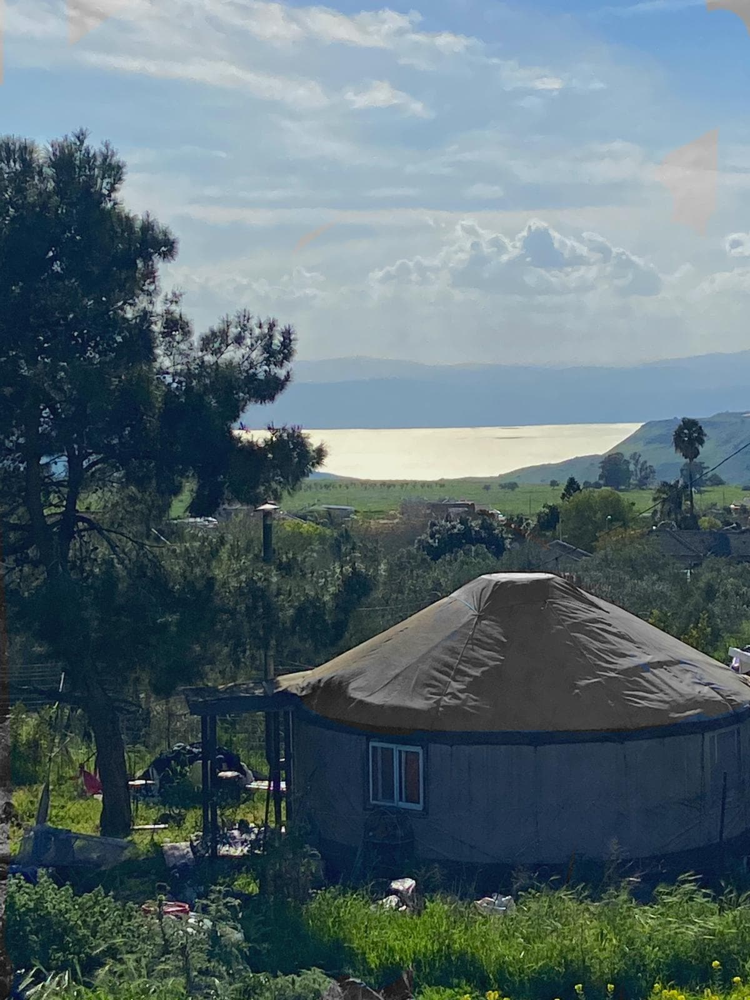
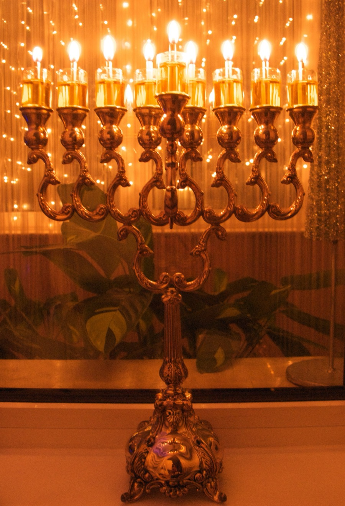
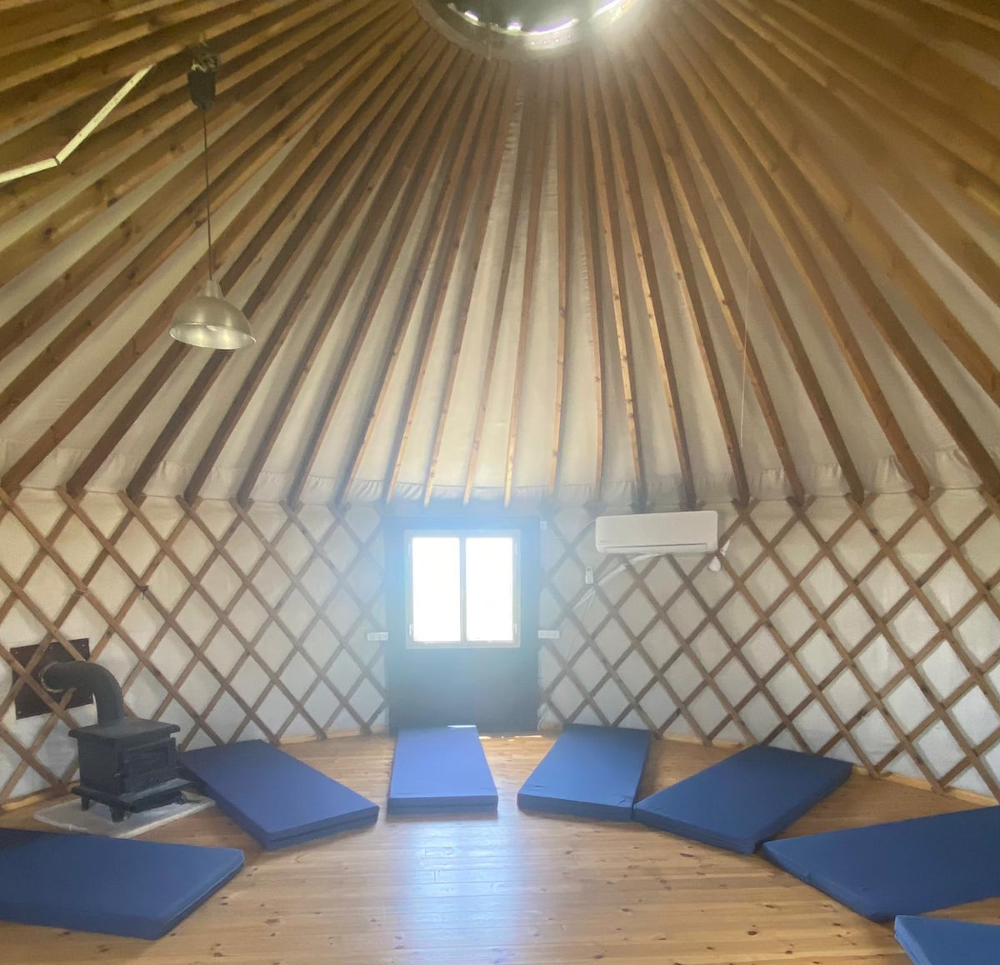
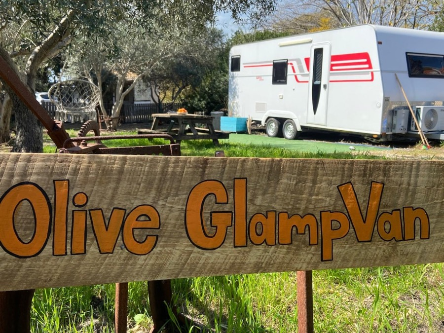
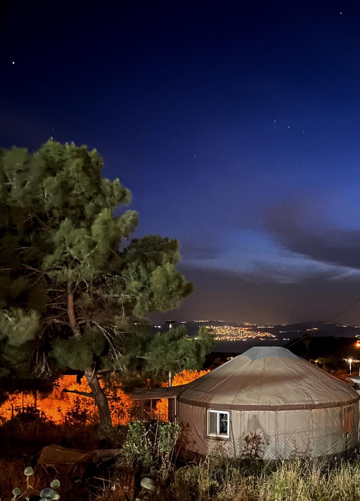

Edición Yurta & Granja: 1 noche en yurta mongola tradicional en Moshav Natur (₪880 verificado), Cascada Gamla de 51m, prensa talmúdica de aceite, taller de chocolate De Karina y viaje directo al Bar Mitzvá de David en Salón LUNA (Or Akiva).
📅 Mié 9 al Jue 10 Dic 2026 (1 noche)
👨👩👧👦 2 adultos + 4 niños (10, 8, 6 y 3 años)
⛺ Yurta en Moshav Natur (₪880 verificado)
🎧 Bar Mitzvá David: Jue 17:30 (Salón LUNA Or Akiva)
1. Alojamiento Nuevo Verificado
Yurta mongola en la granja ecológica Netora (Moshav Natur, Golán Sur). Verificada disponible en Airbnb para el 9→10 dic por ₪880 ILS total para 6 personas (10 camas individuales).
2. Miércoles: Llegar con Luz
Salida de Harish a las 14:00 hrs para llegar a las 15:45 hrs con luz solar plena (atardecer ~16:35). 6ª vela afuera frente al lago Kinneret con farol protector, hot dogs a la parrilla y fogata rústica.
3. Jueves: Paseos del Golán (Sur a Norte)
Natur está a solo 6.1 km (8 min) de Gamla: Cascada de 51m y buitres (09:15–10:45), Pueblo Talmúdico de Katzrin (11:05–12:35, prensa de aceite de Janucá), almuerzo y Taller en Chocolatería De Karina en Ein Zivan (13:45–15:00).
4. Jueves Tarde/Noche: Directo a Salón LUNA
Salida directa a las 15:15 desde Ein Zivan (ya cambiados con ropa de fiesta) hacia Salón LUNA en Or Akiva, llegando 17:30 (buffer 30 min). Montaje 18:00 y fiesta 19:00. La 7ª vela se enciende en casa en Harish.
5. Presupuesto Total Consolidado~₪1.600 ILS total familia (rango ₪1.500 a ₪1.700 ILS), con tarifas 100% verificadas y sin especulaciones.
🎉
¡Bar Mitzvá de David Confirmado!
Dato confirmado: la fiesta de David es el jueves 10-dic a las 19:00 hrs en el salón LUNA (Or Akiva). Alan y la familia viajan directo desde Ein Zivan a las 15:15 (ya cambiados con ropa de fiesta), llegando a LUNA a las 17:30 hrs (buffer de 30 min) para iniciar el montaje a las 18:00 hrs. La 7ª vela se enciende al volver a casa tras la fiesta.
⚠️ Verificación & Datos Importantes v4
Alojamiento verificado en vivo (₪880): La yurta en Moshav Natur fue verificada en la API de Airbnb al 9-nov-2026: disponible sin bloqueo (`available: true`, estancia mínima 1 noche, cotización exacta ₪880.00 ILS total para 2 adultos y 4 niños).
Datos por confirmar con el anfitrión (Orly): • Check-out del jueves: Hora habitual 10:00 u 11:00 AM (por confirmar con el anfitrión).
• Ropa de cama y toallas: Airbnb marca "Essentials no incluido"; llevar sábanas/sacos propios y toallas familiares (por confirmar con el anfitrión si suministran bajo pedido).
• Leña: Para la estufa interior y fogón exterior (por confirmar con el anfitrión si está incluida o llevar propia).
• Portón del moshav: Coordinar llamada al arribar para apertura del portón de seguridad de Natur.
Velas de Janucá y Calefacción: Doble sistema de calefacción garantizado en la yurta (aire acondicionado potente frío/calor + chimenea rústica a leña). Encendido de la 6ª vela en el patio exterior con farol/caja de vidrio antiviento.
📋 Parámetros del Viaje
Resumen Logístico v4
Diseñado para conjugar aventura para los 4 niños, comodidad y puntualidad para el evento de la noche.

Moshav Natur (Golán Sur)
Finca ecológica Netora con vistas panorámicas sobre el Mar de Galilea.
👥 Quiénes viajan
2 adultos + 4 niños (6 en total)
Edades: 10, 8, 6 y 3 años. La yurta cuenta con 10 camas individuales. El niño de 3 años entra gratis a parques.
⏱️ Salida desde Harish
Miércoles 9-Dic a las 14:00 hrs
Llegada a Moshav Natur a las 15:45 hrs con luz solar plena (50 min antes del atardecer 16:35).
🕯️ Janucá en el Golán
6ª Vela (Mié 9) a las ~16:35 hrs
Encendido afuera con caja protectora de vidrio + hot dogs a la parrilla y fogata rústica.
🎧 Cierre Confirmado
Jueves 10: Directo a LUNA
Salón LUNA (Or Akiva). Salida directa del Golán 15:15, llegada 17:30 (buffer), 18:00 montaje y 19:00 fiesta.
✡️ Logística Kosher & Janucá
Kashrut, Velas y Vida Judía en Natur
Moshav Natur es una comunidad mixta religiosa-secular (דתיים וחילונים), lo que asegura entorno acogedor, sinagoga y respeto mutuo.

6ª Vela en Natur
Atmósfera íntima y festiva bajo el cielo estrellado del Golán.
🕯️ 6ª Vela de Janucá (Mié 9)
Afuera en caja de vidrio (~16:35)
Puesta de sol ~16:35 hrs. Encendido en la mesa del patio frente a la yurta con farol antiviento para proteger las llamas.
🍽️ Kosher en la Yurta (Qué llevar)
Cocina no kasher • Vajilla propia
Llevar platos, vasos y cubiertos descartables, ollas propias para las hornallas a gas y papel aluminio grueso (doble capa) para la parrilla BBQ.
🕍 Sinagoga en Moshav Natur
Bet Knéset Natur (en el moshav)
Sinagoga comunitaria activa con tefilot diarias (Shajarit, Minjá y Arvit). Minyanim matutinos adicionales en Hispin (a 8 min).
🛒 Supermercados Kosher
Minimarket local + Bnei Yehuda
Makolet en Natur para básicos. Supermercado Kosher LeMehadrin A.D. Amar en Bnei Yehuda (a 12 min) para salchichas, pan y carbón.
🗺️ Ruta y Distancias con Waze
Tramos de Ruta & Enlaces de Navegación
Secuencia óptima de Sur a Norte: Natur está al lado de Gamla (8 min), avanzando sin ningún retroceso hacia Katzrin, Ein Zivan y Or Akiva.
De Karina → Salón LUNA (Or Akiva): 126 km • 1h 55m
Salida directa a las 15:15 por R91/90/65/4 sin pasar por Harish. Llegada 17:30 (buffer 30 min) para montaje 18:00 y fiesta 19:00.
⛺ Alojamiento Principal
₪8801 noche total
Yurt on the farm / יורט בחווה (Natur)
Anfitriona Orly (8 años hospedando, ★4.84 en 163 reseñas). Yurta mongola circular en la finca ecológica Netora con vista al Kinneret.

★ 4.78 en Airbnb (18 reseñas) • ₪880 verificado
Interior: 10 camas individuales sobre madera, estufa a leña y AC frío/calor.
🛏️ Camas & Distribución
Hasta 10 huéspedes • 10 camas individuales
Colchones/futones distribuidos en círculo sobre piso de madera. Ropa de cama: No incluida por defecto en Airbnb; llevar sábanas/sacos propios y toallas familiares (por confirmar con el anfitrión si suministran bajo pedido).
🔥 Calefacción Dual (Clave Golán ~5 °C)
AC Frío/Calor + Estufa a Leña
Aire acondicionado split de gran potencia térmica + estufa/chimenea rústica de hierro fundido con tiraje exterior. Confort asegurado toda la noche. (Leña: por confirmar con el anfitrión o llevar leña propia).
🚿 Baño y Ducha Privada
Módulo privado completo adyacente
Inodoro estándar con descarga, vanitorio con espejo y ducha privada independiente con receptáculo y agua caliente.
🍳 Cocinas & Fogón Exterior
Cocina a gas + BBQ + Fire Pit
Interior con lavaplatos, cocina a gas (2 hornallas), mini-frigo y kettle. Exterior con mesas bajo los árboles, parrilla BBQ a carbón, fogón metálico con leña y hamaca colgante.
⏰ Horarios, Acceso y Reglas
Check-in: 15:00 a 21:00 • Check-out: Por confirmar
Check-out habitual 10:00 u 11:00 AM (por confirmar con el anfitrión). Portón de acceso de Moshav Natur (se llama a la anfitriona para ingresar). Estacionamiento gratuito en el predio. No mascotas; no fumar; no fiestas.
⭐ Resumen de Reseñas Reales (18)
★4.78 • Hospitalidad y naturaleza
Destacan la vista al Kinneret, atardeceres y la fogata nocturna. Reseñas advierten desconexión total (sin Wifi ni TV) y actividad escolar cercana por la mañana en días hábiles.
Opciones de reserva en caso de que surgiera cualquier eventualidad con la yurta de Natur.

Respaldo 1 • Ma'ale Gamla
🚐 Respaldo 1
Olive GlampVan (Ma'ale Gamla) • ~₪764 ref.
Camper de lujo en huerto privado de olivos (★4.96 en 49 reseñas). 4 camas + comedor abatible para el niño de 3 años. Requiere desbloqueo de fechas con Ori.
De Karina (Ein Zivan): Taller infantil de chocolate y cambio a ropa de fiesta.
15:15
Salida directa desde Ein Zivan hacia Or Akiva (~2 h con tráfico de jueves).
17:30
Llegada a LUNA (Or Akiva): 30 min de buffer previo sin estrés.
18:00
En LUNA, Or Akiva: Alan y familia en el salón (montaje de música).
19:00
Comienza el Bar Mitzvá de David: ¡Gran fiesta familiar!
Noche
Vuelta a Harish: 7ª Vela de Janucá en casa con la familia tras el evento.
🌤️ Entorno y Clima
Moshav Natur, Clima y Checklist
Natur se ubica a ~350m de altitud en el Golán sur, combinando naturaleza viva y tranquilidad comunitaria.
🏡 Moshav Natur (Comunidad Mixta)
Convivencia Religiosa-Secular
Comunidad integradora con sinagoga comunitaria, minimarket (צרכניה) y Mechinat Natur. Ambiente seguro y familiar.
🌡️ Temperaturas Esperadas 9–10 Dic
Día 15–17 °C • Noche 6–8 °C
Atardecer exacto a las 16:35 hrs. Viento fresco de meseta baja la sensación térmica nocturna a ~5 °C.
⛽ Bencineras Más Cercanas
Hispin (7 km) • Katzrin (17 km)
En Natur no hay bencinera propia; cargar en Harish antes de salir o en la estación de Hispin/Avnei Eitan a solo 8 minutos.
Checklist para la Yurta & Bar Mitzvá:
✓
Ropa de cama y toallas: Llevar sábanas/sacos propios y toallas familiares (por confirmar con Orly).
✓
Abrigo por capas: Polar, gorros y cortavientos para disfrutar el fogón nocturno y senderos.
✓
Janucá & Kosher: Januquiá con farol de vidrio antiviento, platos/cubiertos desechables y papel aluminio doble para la parrilla.
✓
Ropa de fiesta en perchas: Mudas listas en el auto para cambiarse en De Karina a las 14:45 hrs antes de salir a LUNA.
✓
Equipo de sonido Alan: Controladora DJ, cables, adaptadores y micrófonos probados.
💰 Transparencia Total v4
~₪1.600total familia
Presupuesto y Desglose v4
Cotización real con tarifa confirmada de Airbnb para la yurta en Moshav Natur (el niño de 3 años no paga en parques).
⛺ Yurta en Moshav Natur (1 noche)₪880
Tarifa oficial Airbnb BookIt en vivo para 6 huéspedes (limpieza incluida). Verificado disponible sin bloqueos.
⛽ Bencina (Auto propio)₪180
~287 km de ruta + holgura (~300 km totales) @ 8 l/100km y ~₪7,50/litro.
🦅 Reserva Gamla (Cascada 51m)₪98
Tarifas INPA: 2 adultos (₪56) + 3 niños (₪42). Menor de 3 años gratis (¡o $0 con Matmón!).
🏛️ Parque Talmúdico Katzrin₪110
Prensa de aceitunas de Janucá: 2 adultos (₪50) + 3 niños (₪60). Menor 3 años gratis.
🍫 Taller Chocolatería De Karina₪225
3 talleres infantiles (~₪75 c/u), sin cafetería.
🛒 Hot dogs (comida kosher)₪80
Hot dogs: salchichas kosher, pan y ketchup. Desayuno y almuerzo del jueves, de casa.
🪵 Carbón₪30
1 bolsa de carbón. La leña del fire pit la deja la anfitriona (por confirmar).
Total Estimado v4~₪1.600
Rango global: ₪1.500 a ₪1.700 ILS. Si la familia cuenta con pase Matmón, el total baja a ~₪1.500 ILS.
⏱️ Planificación Paso a Paso v4
Cronograma Completo Hora a Hora
Estructurado al minuto para disfrutar sin apuros y cumplir con todos los hitos.
MIÉRCOLES 9 DIC6ª Vela en Natur
14:00
Salida puntual desde Harish en auto (115 km, ~1h 45m).
15:45
Llegada con luz solar plena a Natur: Check-in y reconocimiento de la finca ecológica (50 min antes del atardecer).
16:35
Puesta de sol: 6ª vela afuera con farol protector de vidrio frente al lago.
17:15
Hot dogs a la parrilla en el patio de la yurta.
18:30
Fogata rústica (fire pit): leña, malvaviscos y canciones de Janucá.
21:00
Noche tibia en la yurta con AC calor y estufa a leña.
JUEVES 10 DICDirecto al Bar Mitzvá
08:00
Desayuno familiar en la cocina de la yurta y bolsos listos.
09:00
Checkout Yurta: Cargar maletas y ropa de fiesta en el maletero. Solo 8 min a Gamla.
09:15
Reserva Gamla (6 km): Mirador buitres y cascada de 51m (hasta 10:45). Abierto desde 08:00.
11:05
Pueblo Katzrin (17.5 km): Prensa de aceite de Janucá y pitas (hasta 12:35).
12:35
Almuerzo familiar: Comida de casa en el merendero (hasta 13:20).
13:45
De Karina Ein Zivan (22 km): Taller infantil de chocolate. A las 14:45 cambiarse a ropa de fiesta.
15:15
Salida directa a Or Akiva: ~1h 55m con tráfico de jueves por R91/90/65/4 (126 km).
17:30
Llegada a Salón LUNA (Or Akiva): 30 min de buffer previo sin estrés.
18:00
En Salón LUNA: Alan y la familia en el salón; montaje y ecualización de equipos de música.
19:00
Bar Mitzvá de David: ¡Comienza la fiesta! (7ª vela en casa tras volver).
🔄 Comparativa
Qué Cambió en v4
Ajustes estratégicos para el cambio a la Yurta de Moshav Natur.
1
Alojamiento principal en Yurta (Moshav Natur): Yurta mongola en granja ecológica Netora para 6 personas con 10 camas individuales, verificada en Airbnb a ₪880 ILS total disponible para el 9→10 dic.
2
Calefacción dual para invierno: Confort térmico asegurado para la noche en el Golán (~5 °C) con aire acondicionado frío/calor + estufa/chimenea rústica de hierro fundido a leña.
3
Ruta optimizada de Sur a Norte: Natur está a solo 6.1 km (8 min) de Gamla; el circuito fluye sin retrocesos hacia Katzrin y Ein Zivan, sumando ~287 km totales de viaje.
4
Olive GlampVan en respaldo: Se mantiene la van de Ma'ale Gamla como opción de respaldo, sumando también Townhouse en Katzrin (₪890).
5
Presupuesto total verificado: Se actualiza el total familiar a ~₪1.600 ILS con cotizaciones reales en vivo.
📌 Pendientes
Puntos de Coordinación con el Anfitrión
Detalles menores a confirmar con Orly (anfitriona de la yurta en Airbnb).
✓
Alojamiento Verificado y Disponible: Yurta en Moshav Natur (₪880) cotizada en vivo en Airbnb sin bloqueos.
✓
Bar Mitzvá de David CONFIRMADO: Salón LUNA (HaIlan 3–4, Or Akiva), fiesta 19:00, montaje 18:00. Salida directa 15:15 desde Ein Zivan.
?
Hora exacta de Check-out: Habitual 10:00 u 11:00 AM (por confirmar con el anfitrión).
?
Ropa de cama y toallas: Confirmar si suministran sábanas/toallas o llevar propias (marcado Essentials no incluido).
?
Leña y portón de acceso: Consultar si la leña para la estufa/fogón está incluida y coordinar llamado al llegar a Natur.
?
Reservar Chocolatería De Karina: Taller infantil confirmado de 13:45 a 15:00. Reservar previamente (tel: 04-699-3622).
🚀 Plan de Acción Inmediato
Pasos Concretos para Concretar el Viaje v4
Solo 3 pasos sencillos para asegurar esta escapada.

Noche Estrellada
Yurta en Moshav Natur con vista a las luces nocturnas de Tiberias.
1
Reservar Yurta en Moshav Natur en Airbnb:
Enviar solicitud de reserva para el 9→10 de diciembre (₪880 ILS total verificado para 6 huéspedes).
2
Mensaje a Orly (Anfitriona):
Confirmar hora exacta de check-out, consultar si proveen sábanas/toallas (o llevar propias), leña para el fogón y coordinar portón de Natur.
3
Reservar Taller en De Karina (Ein Zivan):
Reservar cupo para 3 niños en el taller de chocolate del jueves a las 13:45 hrs. Llevar la ropa de fiesta en el auto para cambiarse allí antes de salir a las 15:15.